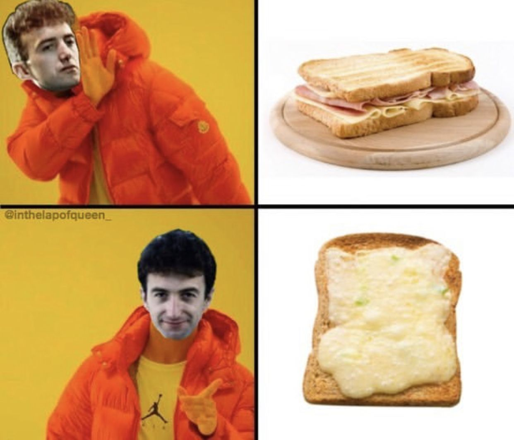

The Cheesiest Cheese Toastie
The Cheesiest Cheese Toastie

Description
This comforting snack is super-quick and easy, perfect for suppertime snacking.
- 1 sourdough bread loaf, sliced
- 200g cheddar, grated
- 1 tsp Dijon mustard
- 2 spring onions , thinly sliced
- 1 egg , beaten
- Place the bread slices under the grill and toast for 2-3 mins until golden on one side. Mix together the cheese, mustard, spring onions and egg. Spread a little over the untoasted side of each slice, then pop back under the grill. Cook for 3 mins more until the cheese is melted and golden. Serve straight away.